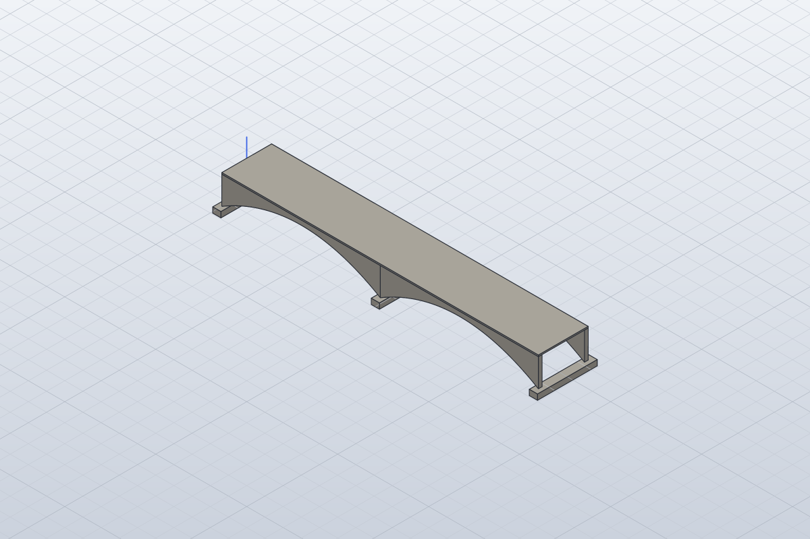
South Fork Bridge (1928)
図面寸法に基づく概略モデル
主橋長 34.798m / 幅 5.470m（採用寸法）
8部材 · closed_spandrel_arch
3Dを開く · SolidCraft · STEP · 寸法・根拠
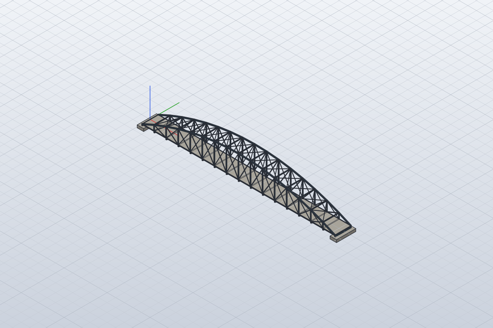
Springfield–Des Arc Bridge (1871–1874)
図面寸法に基づく概略モデル
主橋長 44.907m / 幅 3.747m（採用寸法）
233部材 · bowstring
3Dを開く · SolidCraft · STEP · 寸法・根拠
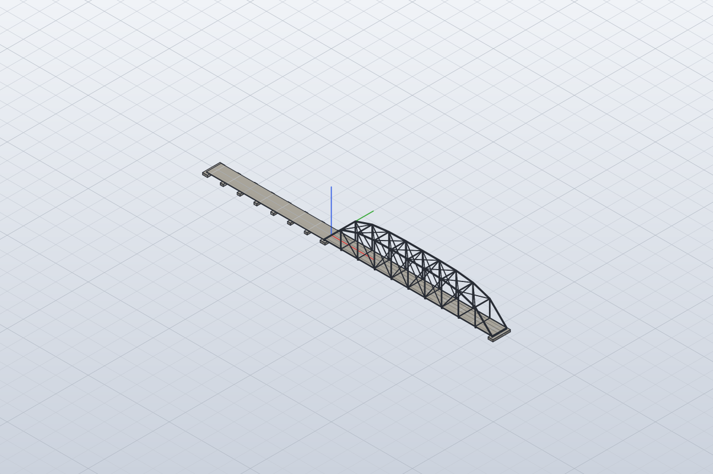
Wyman Bridge (1906)
図面寸法に基づく概略モデル
主橋長 51.816m / 幅 4.500m（採用寸法）
145部材 · parker
3Dを開く · SolidCraft · STEP · 寸法・根拠
Old River Bridge (1891)
図面寸法に基づく概略モデル
主橋長 79.470m / 幅 4.737m（採用寸法）
158部材 · pratt
3Dを開く · SolidCraft · STEP · 寸法・根拠
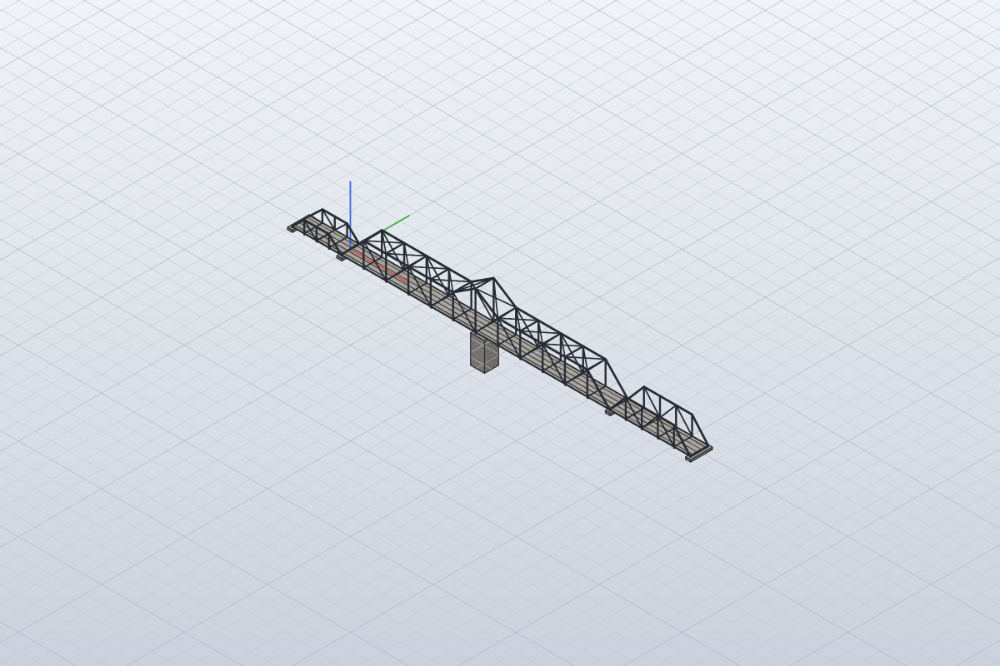
Judsonia swing bridge (1923)
図面寸法に基づく概略モデル
主橋長 80.899m / 幅 5.486m（採用寸法）
246部材 · swing_truss
3Dを開く · SolidCraft · STEP · 寸法・根拠
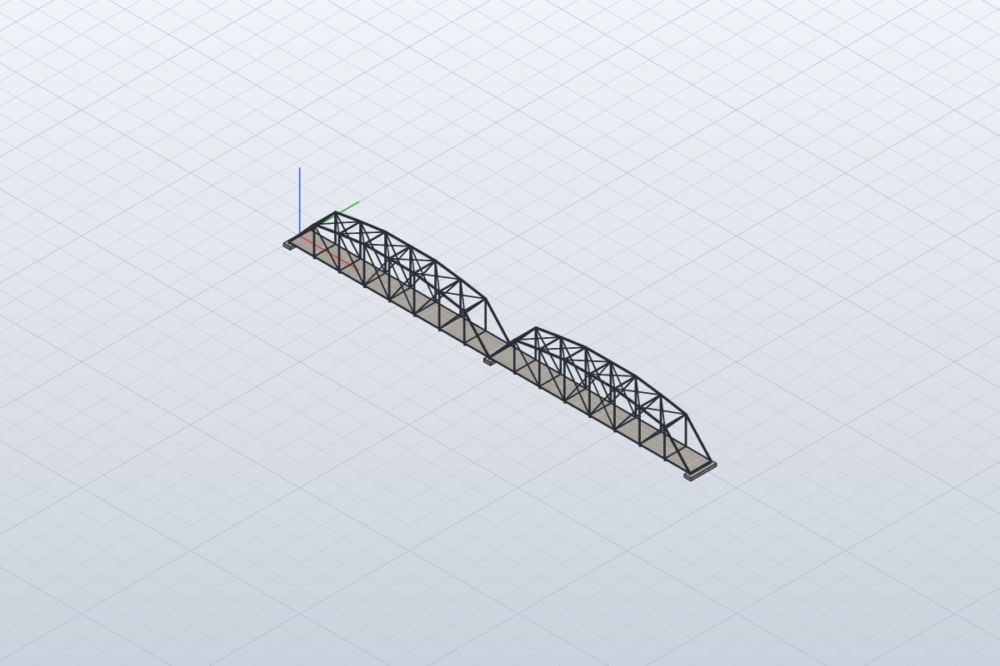
Woolsey Creek Bridge (1947)
図面寸法に基づく概略モデル
主橋長 91.745m / 幅 4.877m（採用寸法）
210部材 · parker
3Dを開く · SolidCraft · STEP · 寸法・根拠
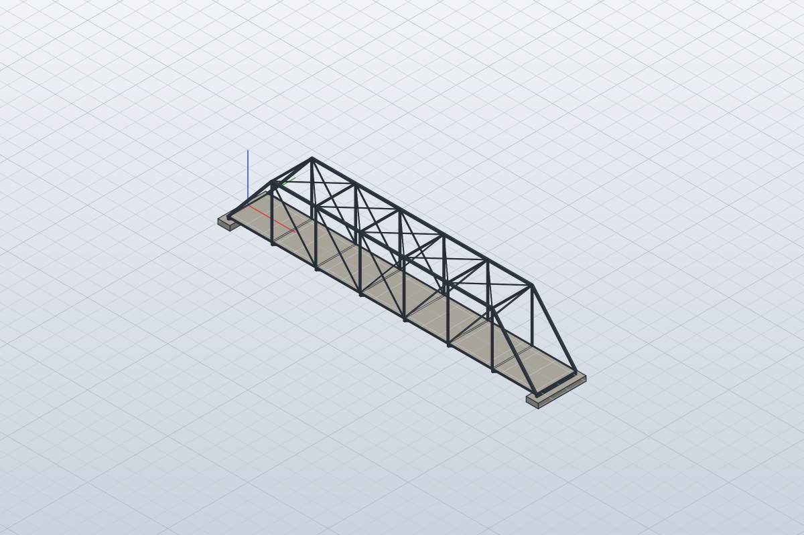
Fryer's Ford Bridge (1890–1891)
図面寸法に基づく概略モデル
主橋長 38.462m / 幅 4.972m（採用寸法）
90部材 · pratt
3Dを開く · SolidCraft · STEP · 寸法・根拠
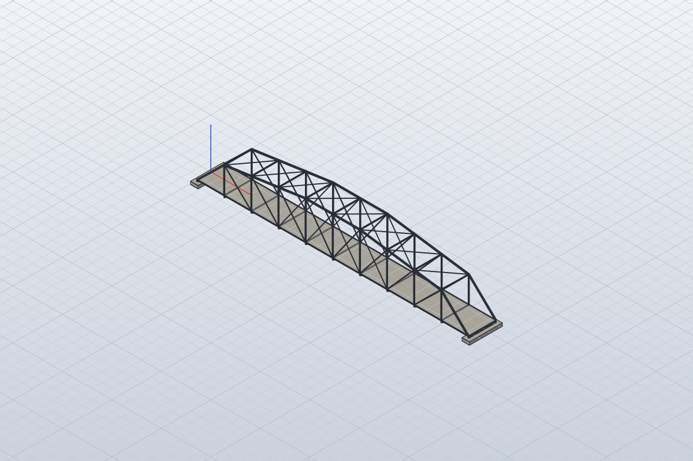
Nimrod / Wallace Bridge (1908)
図面寸法に基づく概略モデル
主橋長 54.864m / 幅 5.547m（採用寸法）
135部材 · camelback
3Dを開く · SolidCraft · STEP · 寸法・根拠
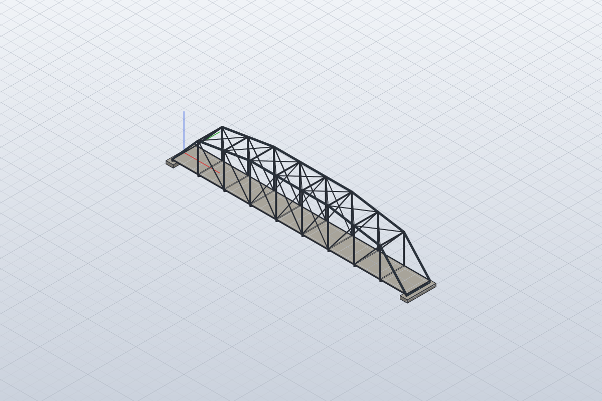
Ward's Crossing Bridge (1905)
図面寸法に基づく概略モデル
主橋長 48.692m / 幅 4.959m（採用寸法）
120部材 · camelback
3Dを開く · SolidCraft · STEP · 寸法・根拠
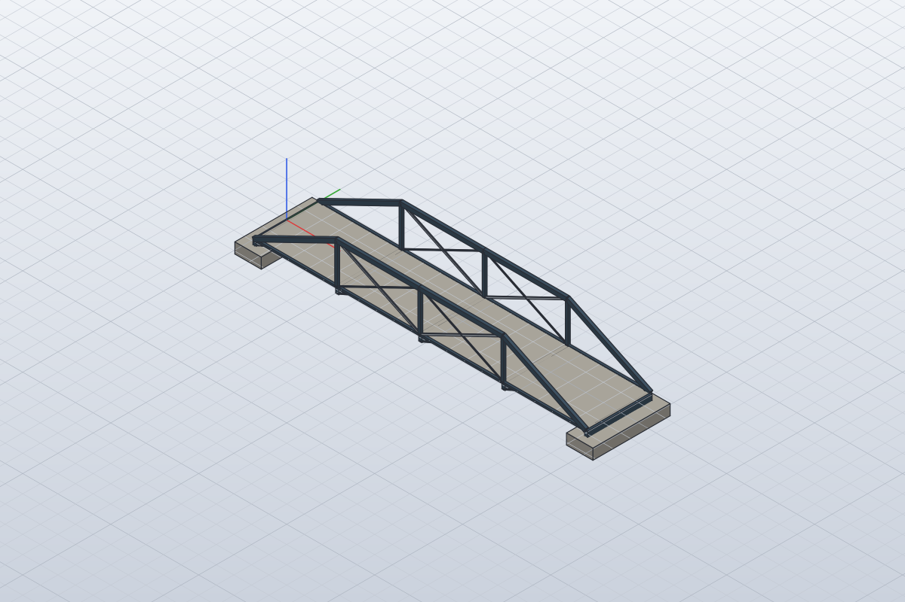
DeGray Creek Bridge (circa 1915)
図面寸法に基づく概略モデル
主橋長 18.847m / 幅 3.658m（採用寸法）
46部材 · pony_truss
3Dを開く · SolidCraft · STEP · 寸法・根拠
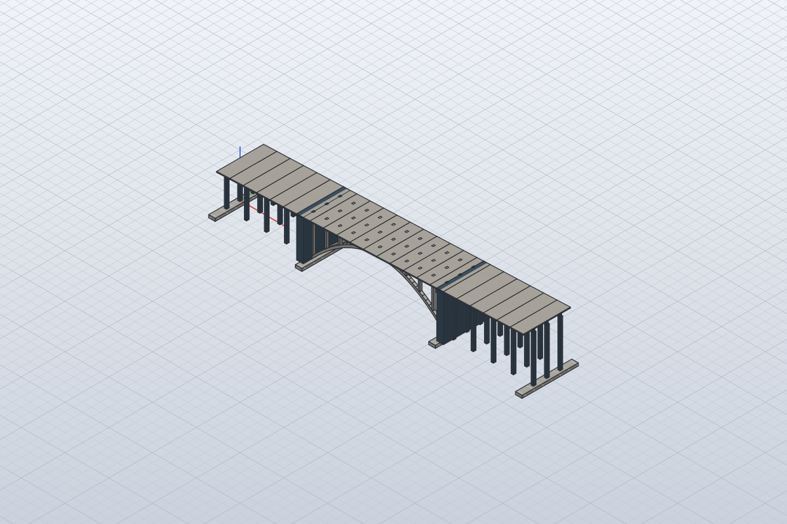
Nineveh Falls / Hammonasset River bridge
図面寸法に基づく概略モデル
主橋長 70.104m / 幅 10.719m（採用寸法）
101部材 · open_spandrel_arch
3Dを開く · SolidCraft · STEP · 寸法・根拠
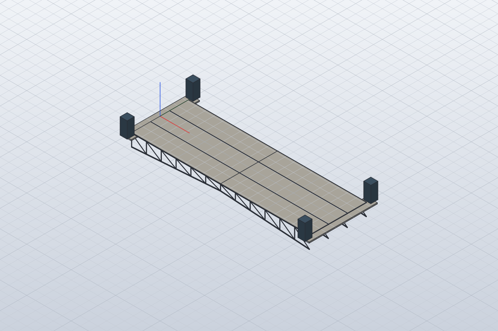
Columbus Drive bascule bridge (UNSCALED REVIEW MODEL)
未縮尺・正規化確認モデル
100000mm基準に正規化（実寸ではありません）
160部材 · bascule
3Dを開く · SolidCraft · STEP · 寸法・根拠
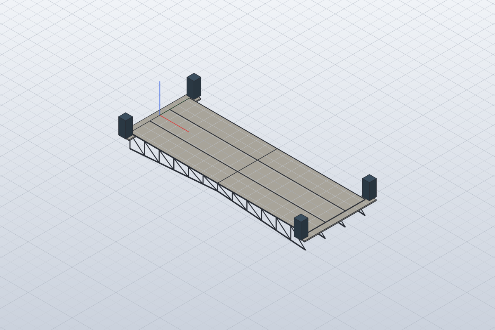
Lake Shore Drive bascule bridge (UNSCALED REVIEW MODEL)
未縮尺・正規化確認モデル
100000mm基準に正規化（実寸ではありません）
160部材 · bascule
3Dを開く · SolidCraft · STEP · 寸法・根拠
La Salle Street bascule bridge (UNSCALED REVIEW MODEL)
未縮尺・正規化確認モデル
100000mm基準に正規化（実寸ではありません）
160部材 · bascule
3Dを開く · SolidCraft · STEP · 寸法・根拠
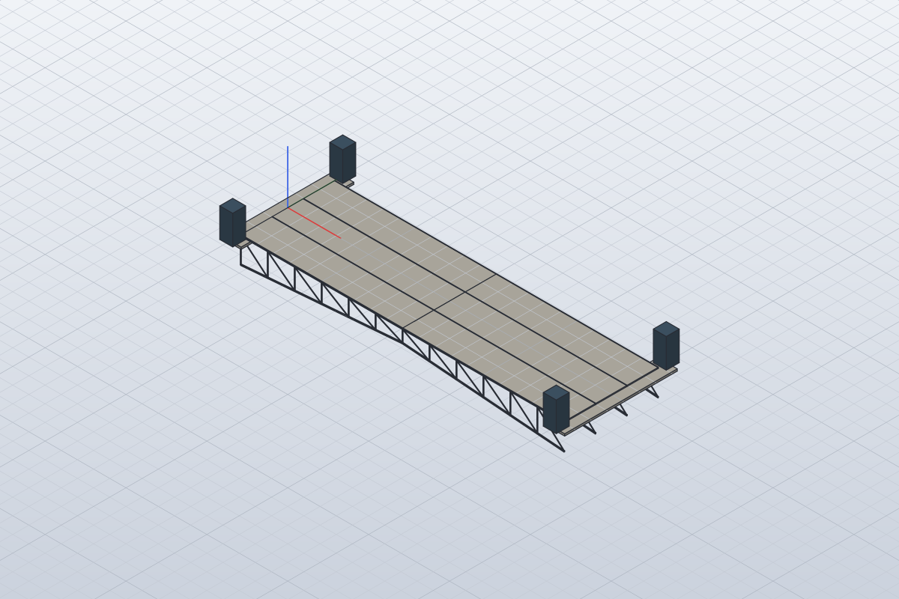
West Van Buren Street bascule bridge (UNSCALED REVIEW MODEL)
未縮尺・正規化確認モデル
100000mm基準に正規化（実寸ではありません）
160部材 · bascule
3Dを開く · SolidCraft · STEP · 寸法・根拠